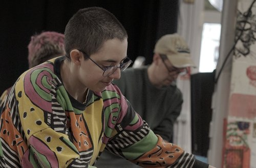

Founder and sound designer Robin Gallardo-Parsons — the person behind every session at Honk Studios.

Hello, I'm Robin (he/him). I'm an Oxford-based freelance sound designer, and founder of Honk Studios.
I've worked as a sound designer, editor and mixer, and as a theatre stage manager since 2017, and I'm overjoyed to now open Honk Studios in the heart of my home, Oxford.
Previously, I've worked with In-Spire Sounds Studio, as well as on commissions for BBC Arts, critically acclaimed podcasts, theatre and immersive sound design, art installations, interactive online theatre, and audio drama.
Chat with Robin on WhatsApp